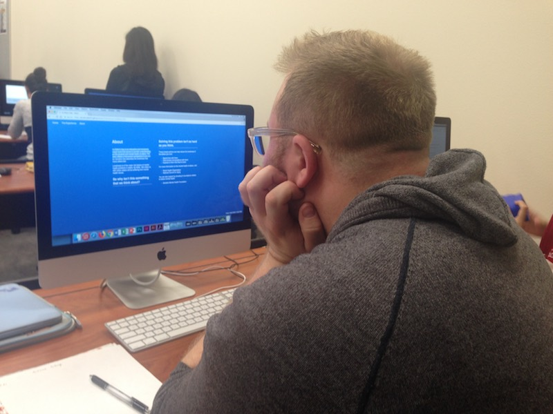
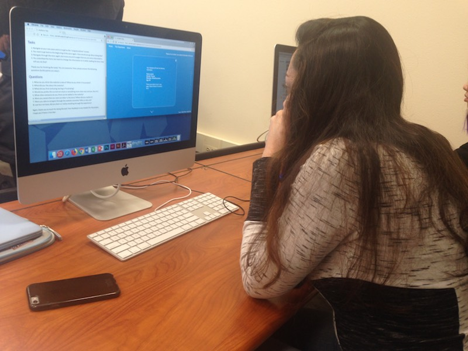

Target Audience Results
For audience testing, two guests, Adam and Persia, were able to test my website. Coming from differernt backgrounds, their answers were drastically different, which allowing me to think more about the various needs of different audience groups.
Test #1 - Adam
From the first round of testing (by Adam), I realized that the switch in background color may have been distracting, as it interrupts the flow of the experience. The user also thinks that the introduction of the game was unclear, and needed more information. While he appreciates the navigation of pages on the right side of the screen, he believes that it would be more helpful if there were words that indicated what the page is about. He also suggests having a preview of the user's character before the game starts to help the user feel more of a first-person perspective as an elderly. In terms of navigation, the user did not seem to have a lot of problem with it. However, he explains that he would like it more if they overlaying facts appeared directly under the main text rather than on the side. I also realized that with a close button on the overlay, the user is more likely to close it by instinct rather than moving on to the next page. When asked about the preference in art style, he says that he prefers a more cartoon style. When navigating on his own, I realized that the webpage displays differently on a larger screen. Therefore, I will also keep in mind to make the webpage more accessible for larger screens.
Test #2 - Persia
The user seems to appreciate the overall layout of the game, with the navigation of the website on the top left and navigation of the individual pages on the right. She also likes the fact that the background color is blue, and it is calming and encourages patience, which goes well with the theme of the game. She also mentions that she likes the moving arrow at the bottom, as it catches the user's attention. However, she suggests that the title for the story portion be changed, as "the experience" can be interpreted differently from user to user. She mentions that when she choose the choices provided during the story, she is curious to know whether or not the different choices will lead to different responses. Therefore, it would be nice if this was explained at the beginning of the game, as the idea of options was unexpected. As for the art style, she prefers the more realistic style, as it helps her connect more to the story.
Future Changes
Through the audience testing, I found out several coding errors, such as a blank message on certain pages. Therefore, I plan to fix these technical errors in the final iteration. Taking the two users' feedback in mind, I plan to change the right navigation column so that words describing each page will appear when hovered. I also plan to give a more detailed explanation of the game in the introduction to prevent the user's confusion. After the user fills out the form, I plan to add an image of their character for the user to acknowledge their role in the game. To further prevent confusion, I will also make the color scheme of the story more coherent and consistent. As for the illustration style, I will be blending the cartoon and realistic style to create a semi-realistic cartoon version. Lastly, I will move the overlay to directly under the main text and remove the close button to maximize the user's time.